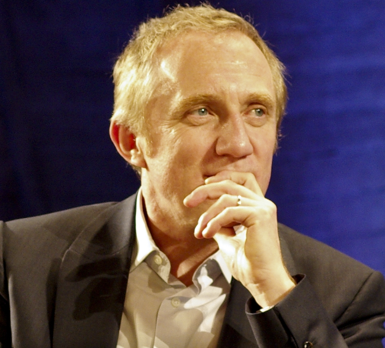

François-Henri Pinault es un empresario francés, actual presidente de un conglomerado de marcas de lujo, e hijo y heredero de François Pinault. Es considerado uno de los hombres más ricos del mundo, con una fortuna familiar estimada el 18 de agosto de 2018 en 30 500 millones de dólares